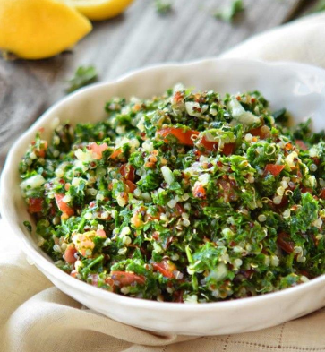

Tabouleh

Middle Eastern Parsley Salad
This refreshing salad is a comforting dish served in Middle Eastern and Mediterranean countries.
Ingredients
- 1/4 cup bulgur wheat
- 1/2 cupp boiling water
- 5 diced tomatoes
- 1 finely diced onion
- 1 cup chopped fresh parsley
- 1/4 cup chopped fresh mint leaves
- Juice of 1 lemon
- 2 tsp olive oil
- salt to taste
Steps
- Place bulgur in a small mixing bowl. Add boiling water, mix, and cover with a towel. Let stand for 1 hour. Drain any excess water.
- Combine tomatoes, onion, parsley, mint, lemon juice, olive oil, and salt. Add bulgur; mix well and serve.
Take me home